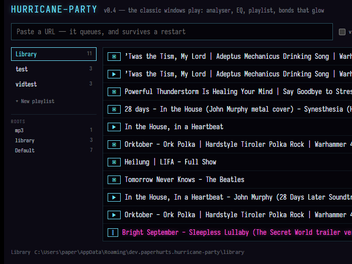
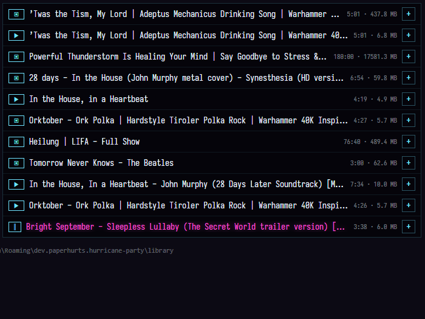
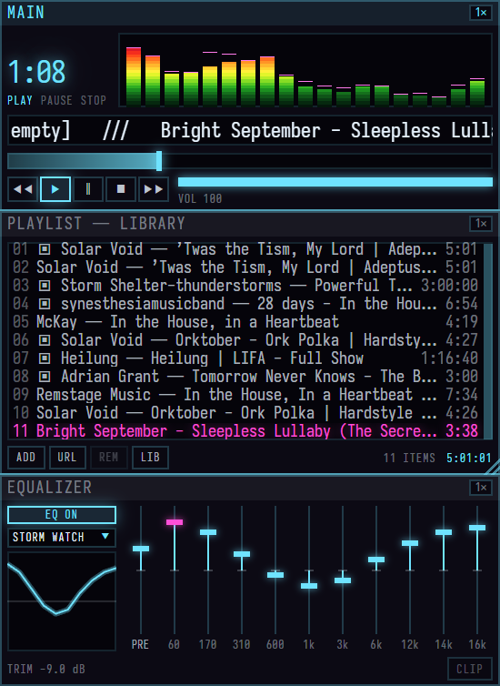
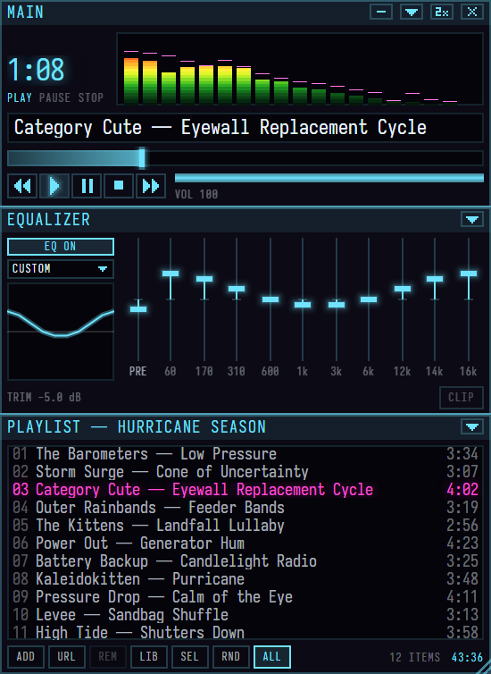
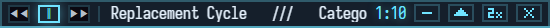

OFFLINE MEDIA PLAYER · WINDOWS
hurricane-
party
Save YouTube videos and MP3s to disk. Play them when the internet is down.

Save YouTube videos and MP3s to disk. Play them when the internet is down.

Paste a URL. One video at a time for now. It queues, downloads into your library folder, and survives a restart.

Add a folder of MP3s. Music you already own goes in the same library.

Press play. Three small windows that snap together. If you remember Winamp, you already know how this works.
A blue panel titled Windows protected your PC appears. That is SmartScreen, and it says the same thing about every program it has not seen before.
Click More info, then Run anyway. It asks once.
Why: hurricane-party is a one-person project and the exe is not code-signed. A signing certificate costs a few hundred dollars a year and would only make this panel go away. The source is public if you want to check what you are running.
The zip is {{size}} for a 10 MB app because yt-dlp, ffmpeg and a JavaScript runtime ride along inside it. They do the downloading and the MP3 conversion; hurricane-party is what you look at.

Transport, time, seek, volume. The analyser runs on a weather radar ramp: green through yellow to red, peaking magenta. Click it for an oscilloscope.
Ten bands, a preamp, presets, and a trim that keeps a boosted mix from clipping. A lamp lights when it does.
Resizes by the corner grip. The lit seam between windows is a bond: drag it to resize both neighbours, double-click to break it.

Double-click Main's title bar and it collapses to a fourteen-pixel bar that stays on top. Title, transport, time. This is the one you live in while working in another app.


The player listens on a named pipe. Anything on the machine can ask what is playing, skip, seek, or read the analyser as a stream of frames, which is enough to drive an LED rig from the bass. The protocol is unstable until v1.0. docs/control-api.md has the handshake and the message table, and the repo's tools folder has two PowerShell clients to start from.